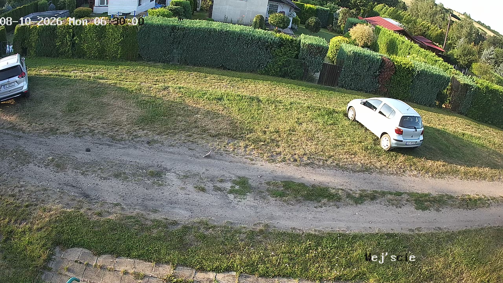
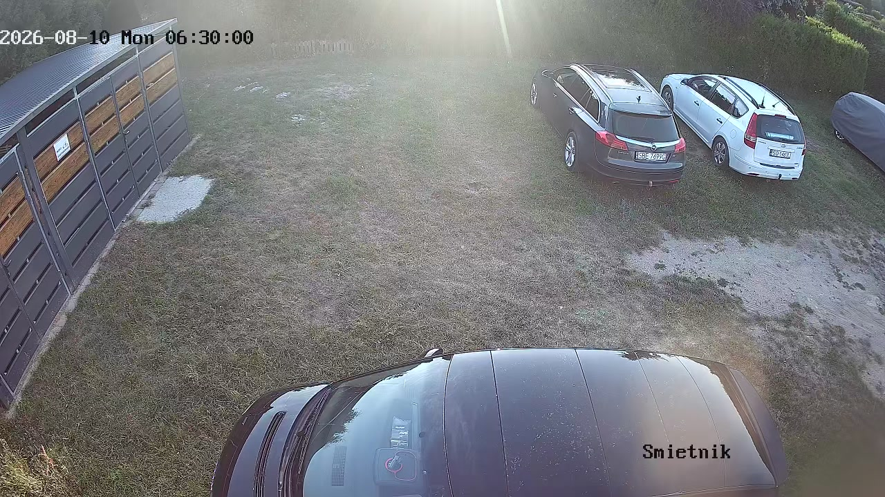

Bez żadnego wycinania — całe okno z kamery, tak jak prosiłeś.
Poranek 10 sierpnia, 06:30 (po nocy z niedzieli na poniedziałek) oraz dla porównania 3 sierpnia.
Powiedz, na której kamerze widać Twojego Opla — i czy Twój zrzut pochodzi z którejś z nich.
Wtedy przestawiam całe szukanie na tę kamerę i ten fragment kadru.

KANAŁ 2 „Wejście" — 10.08 (2560×1440, najostrzejsza z trzech)

KANAŁ 4 „Śmietnik" — 10.08 (1280×720, tu dotąd szukałem)